TEM Cross-sections: Segmentation + Geometric Metrology
00Executive summary
The problem this solves: structural dimensions on TEM cross-section images used to be measured by hand — slow, not reproducible, and not comparable across batches. The approach is to let a segmentation model identify each layer first, then measure on the label map with a deterministic geometry stage. Every result lands in machine-readable fields.
| Capability | Status | Notes |
|---|---|---|
| napari manual annotation + dataset export | done | Emits PaddleSeg train.txt/val.txt directly |
| PaddleSeg training (driven from the web app) | done | Dataset/training/model YAMLs deep-merged, then run as a child process |
| Inference → pseudo-colour label maps | done | pseudo_color_prediction/ |
| Feed predictions back into the annotator (pseudo-labelling) | done | --import-masks |
| Leveling-based auto rectification | done | M1 |
| Interface endpoint offsets a1/a2 ↔ b1..b4 | done | M3 |
| Max downward dip within 5 nm of the endpoint | done | M4 |
| MgO_C straightness / tilt | done | M2 |
| Milled-flank curvature radius, m1/m2 | done | M5 |
| Non_mag edge line and endpoints | done | M6 |
| Non_mag ↔ Milling corner offsets | done | M7 |
| Block_D lower edge (blockD1/blockD2) | missing | An early requirement, superseded by M7 in the current tree — see §8 |
| Per-class shape statistics (area / perimeter) | missing | See §8 |
| Batch trend / distribution plots | done | plot_summary.py — 4 figures + a statistics CSV |
| Results written back to the DB / shown in the web UI | missing | The analysis tool is a standalone CLI |
The table above is organised by code module. Mapped onto the customer's five measurement requirements: 1–4 are complete, and #5 (Junction Bottom Corners) already produces numbers but its definition still needs alignment — the item-by-item comparison is in §4.0.
01End-to-end pipeline
In one sentence: segment first, then analyse. Segmentation answers "what is where"; analysis answers "how big is it and by how much is it off". The only interface between the two stages is the pseudo-colour label map PaddleSeg writes.

1024×1024, FOV 77.35 nm

pseudo_color_prediction/
added_prediction/NOT accepted by the analyser

*_overlay.pngadded_prediction/ is the image blended with the mask — its colours are contaminated by the greyscale, so it is not a label map.
The tool refuses it on purpose: when snapping RGB onto the palette, if more than 5% of pixels are off-palette it errors out rather than silently producing a page of wrong numbers.02Segmentation training
2.1 Annotation and dataset (tools/napari_seg/annotate.py)
The annotator is a thin wrapper around napari whose output directory is a PaddleSeg dataset:
<out>/
JPEGImages/ source images (filenames already ASCII-sanitised)
Annotations/ 8-bit paletted PNG, pixel value == class id
train.txt one line per image: "JPEGImages/xxx.jpg Annotations/xxx.png"
val.txt
class_names.txt first line is always _background_| Point | Detail |
|---|---|
| Filename sanitising | PaddleSeg splits train.txt lines on whitespace, so anything outside [A-Za-z0-9._-] (CJK, spaces, parentheses) becomes _; collisions get a _2, _3, … suffix. --print-names --no-gui previews the renaming before committing. |
| Palette | build_palette() is the PASCAL VOC colormap with the leading black entry dropped, so class id == palette index and class 0 is (128,0,0) dark red, not black. This is exactly why the analyser can map RGB back to ids — both tools call the same function, so they cannot drift apart. |
| Class order defines the ids | 11 classes here: SAF_Ru_L, SAF_Ru_R, MgO_L, MgO_R, MgO_C, Non_mag, Milling_L, Milling_R, Leveling, Block_U, Block_D, 12 with background. Change the order and every historical label shifts, so it is pinned in class_names.txt and travels with the dataset. |
| Resuming | Reopen the same --out without --classes and the class list is read back from class_names.txt. |
# first annotation pass
.\.venv-napari\Scripts\python tools\napari_seg\annotate.py `
--images G:\datasets\TEM\1300kgroup1\1300kx_FOV_76.37nm `
--out G:\datasets\TEM\1300kgroup1\1300kx_FOV_76.37nm_out `
--classes SAF_Ru_L,SAF_Ru_R,MgO_L,MgO_R,MgO_C,Non_mag,Milling_L,Milling_R,Leveling,Block_U,Block_D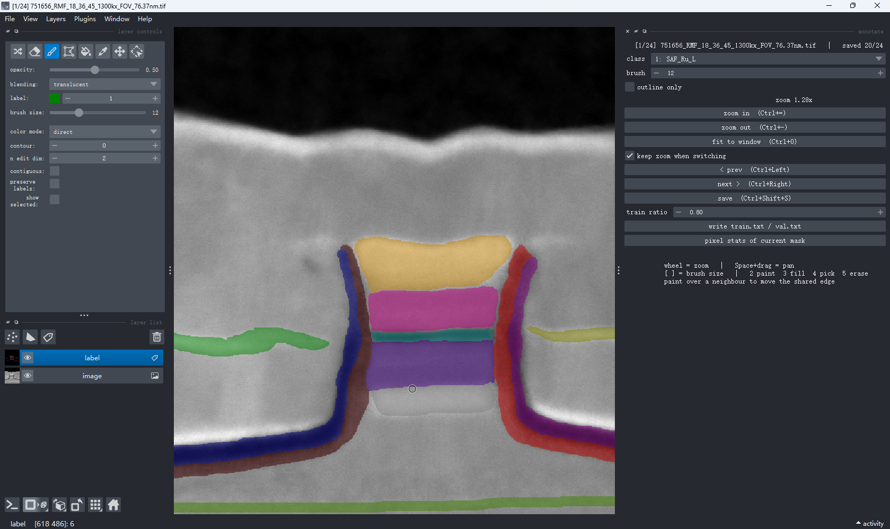
label over image at 0.5 opacity);
on the right, the panel this tool adds: class dropdown, brush size, outline only, prev/next, save,
train ratio and write train.txt / val.txt. The title bar tracks progress as
[1/24] … | saved 20/24.
The hint line at the bottom states the working conventions, the important one being
"paint over a neighbour to move the shared edge" — push into the adjacent layer rather than erasing
first and painting after, so the two layers never end up separated by a one-pixel seam of background.2.2 One training job = three YAMLs, deep-merged
The web app does not ask anyone to write a full PaddleSeg config. The config is split into three independently authored files, merged at launch time:
Dataset config ─┐
Training config ─┼─► deep-merged YAML ─► tools/train.py ─► stdout parsed into TrainingLog rows
Model config ─┘
Precedence: dataset → training → model (later wins, merged per key)| Config | Owns | Typical content |
|---|---|---|
| Dataset | Where the data comes from | train_dataset / val_dataset, dataset_root, num_classes, transforms |
| Training | How to train | batch_size, iters, optimizer, lr_scheduler |
| Model | What to train | model (architecture + backbone), loss |
- It trains by iteration, not epoch.
itersis the total step count; likewisewarmup_itersandsave_interval. The epoch-named DB columns hold iteration counts for Seg projects. len(loss.types)must equal the number of logits the model emits (main head + auxiliary heads), or training dies withRuntimeError: The length of logits_list should equal to the types of loss config. That is whyloss:always lives in the model config and never in the training config — so any training preset can be combined with any model preset without producing a mismatched loss. UNet=1, OCRNet=2, PP-LiteSeg=3, BiSeNetV2=5.save_dir/save_interval/log_itersare CLI arguments, not YAML keys.
yaml.parse() throws
Map keys must be unique. Merging is also per-key, so a training config can refine a single field under train_dataset.transforms without restating the whole dataset block.2.3 Launching training, and the logs
# the command the web app actually generates and runs (PaddleSeg branch)
python -m paddle.distributed.launch --gpus 0 tools/train.py `
--config "<merged>.yml" `
--do_eval `
--save_dir "<output>/jobs/<job_name>"- The working directory is resolved from
project.frameworkbysrc/lib/frameworks.ts::getWorkDir()to the PaddleSeg repo root. - The command is generated server-side only; a
commandfield in the request body is never accepted (it runs withshell:true).--gpusis strictly whitelisted too. - Child-process stdout is fed line by line into a PaddleSeg-specific parser that extracts iter / loss / lr / ETA.
EVALis a multi-line block, so the parser is stateful and only emits amIoU / Acc / Kappa / Dicerecord once the block closes. - Typical baseline preset: 80k iters @ 512×512, SGD + PolynomialDecay(power 0.9),
batch_size 4. Run the 20k "quick" preset first to prove the pipeline end-to-end before committing to a full run.
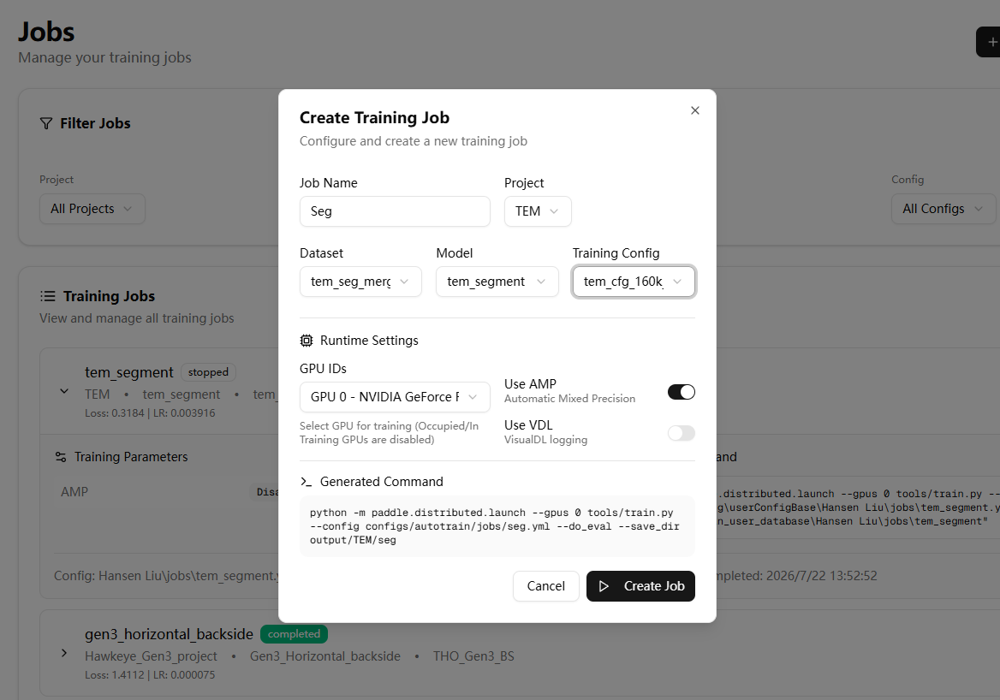
tem_seg_merged + tem_segment + tem_cfg_160k), plus runtime options
(GPU, AMP, VDL). The Generated Command box at the bottom is assembled server-side from those choices
and shown before it runs — the user never gets to write a command.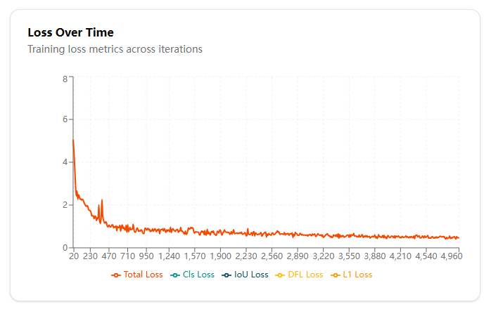
TrainingLog rows the stdout parser produced.
About 5000 iterations, falling from 5.1 to roughly 0.5 before flattening. The Cls / IoU / DFL / L1 entries
in the legend are detection-task loss components; for a segmentation job only Total Loss carries data.2.4 Prediction output
cd <PaddleSeg>
python tools\predict.py `
--config <merged>.yml `
--model_path output\best_model\model.pdparams `
--image_path G:\datasets\TEM\new_batch `
--save_dir G:\datasets\TEM\new_batch_predTwo directories come out: pseudo_color_prediction/ (the label map — this is what the analyser consumes) and added_prediction/ (a blended preview, for human eyes only).
2.5 Pseudo-labelling loop (growing the dataset)
Annotation is the expensive step, so the pipeline is a closed loop: the model predicts, predictions are imported back into the annotator, a human only corrects them, and the result becomes new training data.
.\.venv-napari\Scripts\python tools\napari_seg\annotate.py `
--images G:\datasets\TEM\new_batch `
--out G:\datasets\TEM\1300kgroup1\1300kx_FOV_76.37nm_out `
--import-masks G:\datasets\TEM\new_batch_pred\pseudo_color_predictionExisting masks are kept unless --overwrite is passed; add --no-gui to import without opening the annotator.
03Analysis tool overview
3.1 How to run
# single image
python tools\tem_analysis\analyze.py --mask <mask.png> --out <dir>
# batch + summary CSV + overlay drawn on the raw TEM greyscale
python tools\tem_analysis\analyze.py `
--mask-dir G:\datasets\TEM\1300kgroup2\normal_test_predict\pseudo_color_prediction `
--out G:\datasets\TEM\1300kgroup2\normal_test_analysis `
--overlay-on G:\datasets\TEM\1300kgroup2\normal_test `
--csv summary.csv
# self-test (synthetic geometry with known ground truth, no real data needed)
python tools\tem_analysis\selftest.pyDependencies: numpy / Pillow / scipy / matplotlib, plus optional opencv-contrib-python (used only for cv2.ximgproc.thinning;
without it the tool falls back to the NumPy Guo–Hall implementation in skeleton.py, which the self-test verifies is pixel-identical, just slower).
Main options
| Option | Default | Meaning |
|---|---|---|
--scale-nm | auto | auto = read the FOV out of the filename and divide by image width; or pass an explicit nm/px |
--fov-nm | — | Give the field of view (nm) directly; still divided by the image width |
--no-rotate | off | Skip Leveling rectification and measure on the raw mask |
--endpoint-extend | none | region extrapolates a1/a2/b1/b2 back to the region tip along the tangent, compensating skeleton retraction |
--window-nm | 5.0 | Arclength window for the dip measurement |
--min-area | 30 | Minimum connected-component area (px) |
--keep-all-components | off | Disable "keep only the largest component per class" |
--thinning-backend | auto | cv2 / numpy |
--milling-edge-method | outer | outer (vacuum-facing / milled) / inner (against the stack) / skeleton (comparison only) |
--milling-frame-margin-px | 4 | Discard boundary pixels this close to the image frame or the rotation padding |
--milling-smooth | 1.0 | Assumed edge noise (px); sets the spline smoothing |
--milling-middle-frac | 1.0 | Central fraction eligible for the curvature maximum; 1.0 = unrestricted |
--milling-edge-margin-nm | 2.0 | Arclength excluded at both ends (spline end artefacts) |
--milling-circle-window-frac | 0.8 | Circle-fit half-window = this × spline radius (floor 12 px) |
--milling-tail-frac | 0.25 | Arclength fraction at each end fitted with a line (line–curve–line check) |
--nonmag-edge | auto | Pick the edge not adjacent to Block_D; can be forced to top/bottom |
--nonmag-sigma / --no-nonmag-trim | 2.0 / on | Sigma clipping for the Non_mag fit |
--classes | built-in 12 | Comma-separated override of the class order |
--overlay-on / --no-overlay | — | Draw the overlay on the raw image / skip the overlay |
3.2 Code structure
| File | Responsibility |
|---|---|
analyze.py | CLI, scale resolution, running measurements in registry order, isolating failures, writing output |
labelmap.py | Pseudo-colour PNG → class-id array; class-name resolution; component cleaning (class_mask); FOV parsing from the filename |
rectify.py | Rectification affine and its inverse (nearest-neighbour, padded with 255 = ignore) |
skeleton.py | Guo–Hall thinning (cv2 / NumPy), longest path through the skeleton graph, Polyline (arclength, endpoints, tangents, windows) |
contour.py | Ordered outer-contour tracing, longest contiguous run on a closed loop |
geometry.py | TLS/OLS line fits, sigma-clipped fit, circle fit, cubic B-spline with analytic curvature |
context.py | AnalysisContext: mask/skeleton caches, px↔nm, dual-coordinate points, offsets, warnings |
measures/*.py | The 7 measurement modules, each a measure(ctx) -> dict |
report.py | JSON serialisation, fixed-column CSV, matplotlib overlay |
selftest.py | End-to-end self-test on synthetic geometry with known ground truth |
Milling_L, only results.milling_l becomes null and a line is added to
warnings; the other six still produce output and the batch keeps going.3.3 Scale and rectification: the two premises behind every number
Scale (nm/px)
By default the field of view is read from the filename with a regex: ..._FOV_76.37nm.png → 76.37 nm, divided by the actual image width.
All 26 images in the sample batch parsed successfully, giving 76.37 / 1024 = 0.074580 nm/px.
- Dividing by the real width rather than a hard-coded 1024 keeps it correct if a mask is ever exported at a different size; a width ≠ 1024 raises a warning.
fov_nm/image_width_px/scale_nm_per_px/scale_sourceare all recorded in the JSON and the CSV, so the conversion can be re-checked afterwards.- If no FOV can be parsed and no
--scale-nmwas given, the tool errors out rather than silently using a wrong scale.
Rectification
The Leveling layer is fitted to a line, giving a tilt angle; the whole image is rotated so that line is horizontal, and every subsequent measurement runs on the rectified map.
The statement "dy is how far down it sits" only has physical meaning after this step.
- Interpolation must be nearest-neighbour (
order=0): the array holds class ids, and any averaging invents classes that were never predicted. - Padding is
255(ignore), not 0 (background), so "outside the original frame" stays distinguishable from "predicted as background" — M5's crop-edge rejection depends on exactly this. - Every point in the JSON carries both rectified and original-image coordinates (
x_px/y_pxandx_orig_px/y_orig_px), so results can be overlaid back on the raw TEM image. - The cost: resampling noise of 1–2 px on layer skeletons. In the self-test the residual angle after rectification is 0.007°, but dy error can reach about 5 px.
--no-rotateavoids it entirely.
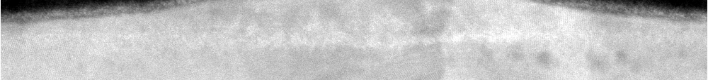
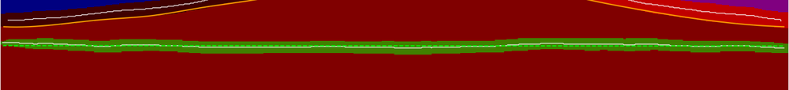
The Leveling band at the bottom of the frame.
Its contrast in the raw image is very low — which is exactly why it is extracted by segmentation rather
than by thresholding. The bright green dashed line on the right is fitted after rectification and is how
the tool self-checks that the rotation really did flatten it.
04Measurements, one by one
4.0 The five requirements → status
Four of the five requirements are complete and backed by measured data. The fifth already produces numbers, but its definition and the choice of magnitude still need to be agreed.
| # | Requirement | Module(s) | Key outputs | Measured (median, n=26) | Status |
|---|---|---|---|---|---|
| 1 | Leveling & Scale Calibration | M1 leveling + scale resolution |
angle_deg_image, angle_stderr_deg, rmse, residual_angle_deg_after_rotation; scale_nm_per_px, fov_nm, scale_source |
tilt 0.259° (σ 0.63) 0.074580 nm/px |
done |
| 2 | SAF Ru Tip ↔ MgO Alignment | M3 interfaces(uses M2's b3/b4) |
a1_b1, a1_b3, a2_b2, a2_b4, each with dx/dy/distance (px + nm, plus convention) |
dx +5.332 / −5.332 nm (σ 0.61 / 0.50) |
done |
| 3 | Ru Tip Waviness | M4 *_dip |
max_downward_deviation, max_downward_arclength, max_abs_deviation, full deviation_profile |
left 0.597 nm, right 0.709 nm | done |
| 4 | Sensor Barrier Waviness | M2 mgo_c |
rmse, max_residual, perp_rmse, angle_deg_image, fit_length, residual_profile |
rmse 0.045 nm max_residual 0.126 nm |
done |
| 5 | Junction Bottom Corners | M5 milling_l/rM6 non_magM7 corner_offsets |
m1/m2, local_circle.radius, tail_left/right, Non_mag1/Non_mag2, corner dx/dy/distance |
R 4.835 / 5.329 nm corner dx −1.251 / +1.288 nm |
to refine |
- The definition of "corner" has not been confirmed with the customer. Today it is the
curvature maximum of the milled flank. If what is wanted is the intersection of the two straight
tails (
tail_left/tail_rightalready fit those lines), that definition is insensitive to measurement scale and more stable, but its numbers would differ systematically from the current ones. This is not an accuracy problem, it is a definition problem, and it has to be settled first. - Curvature magnitude is scale-dependent. The spline says 4.818 nm, the osculating circle 4.835 nm, and on synthetic ground truth the two differ by 15%. "Over what window is the radius defined" must be written into the spec, or two parties will quote two numbers that never reconcile.
Block_D's lower edge (blockD1/blockD2) is not implemented in the current tree; the old internal requirement 7 was superseded bycorner_offsets. If the junction bottom still needs that edge, adding a module with the §7 template is cheap.- There is no fallback when
local_circle.reliable = false— the image is simply discarded. Falling back to the spline radius with a stated uncertainty would be better. - All of the above are definition alignment, not algorithm defects. The first four can be called done precisely because their definitions are unambiguous.
Requirement 1–7 comments at the top of measures/*.py are an older internal
numbering and do not map one-to-one onto the customer's five:
internal 1 → customer 1 | internal 2, 3 → customer 2, 3 | internal 4 → customer 4 | internal 5, 6, 7 → all fold into customer #5
Which also explains why #5 spans three modules and carries the most room for refinement.
4.1 Module execution order
The seven modules run in registry order, and later ones may read earlier results:
leveling → mgo_c → interfaces → milling_l → milling_r → non_mag → corner_offsets.
Each is described below as what it measures / how it is defined / algorithm / output fields / pitfalls.

M1 · leveling — the rectification datum
What it measures: the sample's tilt in the image, and how straight the Leveling layer itself is. It is the only module whose result feeds back into every other measurement.
| Definition | Leveling class → largest component → Guo–Hall skeleton → line fit → tilt angle |
|---|---|
| Algorithm | The angle comes from TLS (total least squares) — OLS systematically flattens the slope when residuals are comparable to the x-span, while TLS is orientation-unbiased. R²/rmse come from an OLS y~x fit, because that is what "fit R²" normally means. Both are reported so the difference is visible rather than hidden. |
| Reliability | Judge it by angle_stderr_deg (slope standard error = σ/√Σ(x−x̄)²), not by R². The layer is re-fitted after rectification; a residual angle > 0.05° triggers a warning — a free self-check on the whole rotate/inverse-transform path. |
| Output | angle_deg_image, angle_deg_math, angle_stderr_deg, rmse, max_residual, skeleton_length, residual_angle_deg_after_rotation, rectified{...} |
R² = 1 − SS_res/SS_tot, and for a horizontal layer SS_tot (the variance of y) is itself tiny — so an excellent line 1029 px long with only 1.9 px rmse still scores R² ≈ 0.02.
Leveling, MgO_C and Non_mag are all like this. Results therefore carry fit_r2_degenerate: true and an explanatory fit_r2_note.
Judge straightness by rmse and max_residual.The Leveling band has very low contrast
in the raw image and cannot be thresholded out — which is precisely why it is handed to the segmentation model.
What makes it a good datum is that it spans the whole frame (1029 px of skeleton), the longest line
available, so its angle has a standard error of only 0.012°.
M2 · mgo_c — MgO_C straightness and tilt
What it measures: the angle and goodness of fit of the central MgO barrier layer once fitted to a line, plus the two endpoints b3/b4 of that fitted segment.
| Definition | MgO_C skeleton → TLS line; b3/b4 = the extreme (min/max x) skeleton points projected onto the fitted line |
|---|---|
| Why b3/b4 exist | b1/b2 (M3) are the raw skeleton tips; b3/b4 are the endpoints of the straight-line model. The difference between them is the local waviness of the layer. So both a1→b1 and a1→b3 are reported: the first targets the real tip, the second the model and is insensitive to local burrs. Measured: dx agrees to 0.001 nm (medians 5.332 / 5.333 nm), but the dy scatter is smaller for b3. |
| Output | angle_deg_image/math, fit_r2 (+ degenerate flag), fit_slope/intercept, rmse, max_residual, perp_rmse (perpendicular-distance rmse), b3, b4, fit_length, residual_profile (per-point residual curve) |
| Measured | rmse ≈ 0.045 nm (0.6 px), max_residual ≈ 0.126 nm. Tilt varies between −3.5° and +3.5° across the batch. |
M3 · interfaces — interface endpoint offsets a ↔ b
What it measures: the horizontal and vertical offset of each SAF_Ru layer's inner endpoint relative to the MgO_C endpoints. This is the core set of numbers in the whole system.
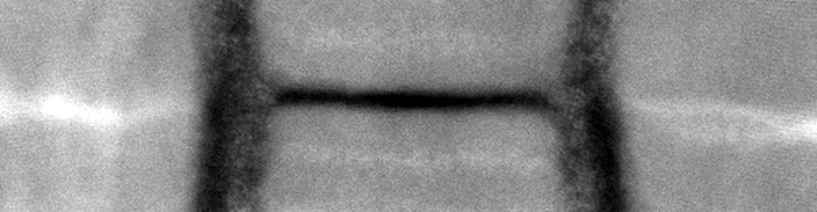
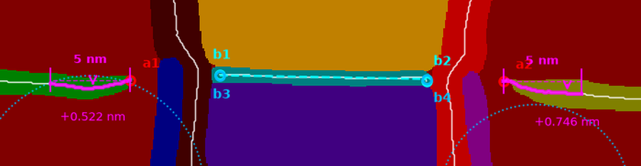
Close-up of the central region. a1/a2 = SAF_Ru inner tips; b1/b2 = MgO_C skeleton tips; b3/b4 = MgO_C fitted-segment endpoints (the cyan dashed line is the fit); the magenta parts belong to M4's 5 nm window. Look at the raw image on the left: the 5.3 nm gap between a1 and b1 is a gradual transition with no crisp boundary — where a human puts the endpoint is a judgement call, and that is the root cause of the old measurements not being reproducible.
| Endpoint definitions |
a1 = SAF_Ru_L skeleton tip at max x (the end facing the stack)a2 = SAF_Ru_R skeleton tip at min xb1/b2 = MgO_C skeleton tips at min/max xb3/b4 = endpoints of the MgO_C fitted segment (from M2) |
|---|---|
| Four reported offsets | a1_b1, a1_b3, a2_b2, a2_b4, each with dx/dy/distance in both px and nm |
| Sign convention | dx>0: b is to the right of a; dy>0: b sits lower than a in the image. That sentence is written verbatim into every offset's convention field so nobody reading a report has to guess. |
| Measured | 26 images: a1_b1.dx median +5.332 nm (σ 0.61), a2_b2.dx median −5.332 nm (σ 0.50) — symmetric left/right, as physically expected. |
--endpoint-extend region extrapolates back to the region tip along the local tangent (in that mode the self-test's a1 error is zero); it is off by default to stay faithful to Guo–Hall.
The saving grace: dx/dy are differences of two endpoints, so when both retract by similar amounts the effect largely cancels.M4 · *_dip — maximum downward excursion within 5 nm of the endpoint
What it measures: walking 5 nm back along the SAF_Ru skeleton from a1 (or a2), how far down does the layer dip? It characterises sagging/bending near the tip.
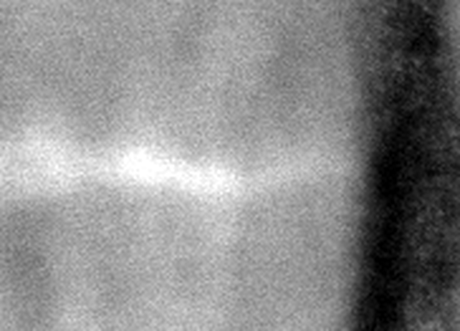
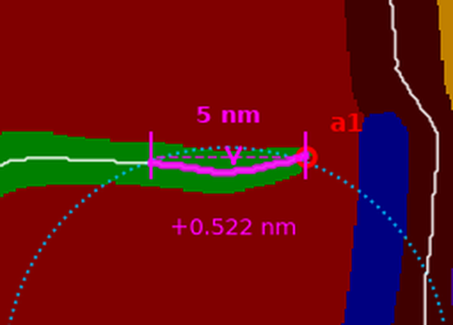
Close-up around the left endpoint a1. The raw image on the left does show the bright layer bending downward as it approaches the tip, but only by 0.522 nm ≈ 7 px — visible to the eye, yet hard to measure by hand. This is exactly the case for scanning the whole window point by point along arclength.
| Baseline | The endpoint itself: dev = y − y(endpoint), positive = lower |
|---|---|
| Window | 5 nm measured along arclength, not along x. The layer bends near the tip, so an x-window would cover a different amount of actual layer. |
| Output | window (requested and actual, px + nm), window_points, window_start/end, window_polyline (the traversed skeleton span, verbatim), max_downward_deviation, max_downward_point, max_downward_arclength (how far into the window the maximum sits), max_abs_deviation/max_abs_point (largest by magnitude, possibly upward), deviation_profile (the whole s–dev curve) |
| On the overlay | Magenta: the thickened skeleton span is the searched range, the two vertical ticks are the window bounds, the dashed line is the endpoint baseline, and the arrow points at the maximum with its value. |
| Measured | Left median 0.597 nm (0–1.417), right 0.709 nm (0.224–1.268). |
deviation_profile is written to JSON
So that trying a different window length, or checking whether the maximum is an isolated burr, does not require re-running the batch — it can be done on the JSON.
The same applies to M5's curvature_profile and M2's residual_profile.M5 · milling_l / milling_r — milled-flank curvature, m1/m2
What it measures: the flank produced by ion milling. Its shape is straight–curved–straight; the goal is the point of sharpest bend (m1 left / m2 right) and the curvature radius there.
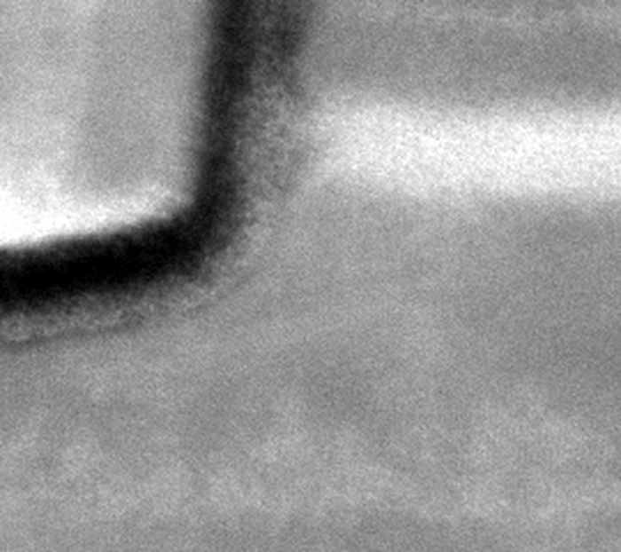
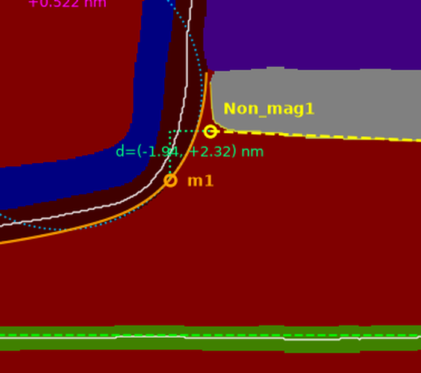
Close-up of the left Milling band. The orange curve is the selected milled flank (spline sample), m1 is the curvature maximum, and the blue dotted circle is the osculating circle fitted to the raw edge points there — whether the radius estimate is sane is visible at a glance. The raw image confirms that the flank picked is the one facing vacuum: uniform background outside it, device layers inside.
(a) Which flank: adjacency, not the skeleton normal
A Milling band has two flanks: one against the device stack (MgO_L/MgO_R/Block_*), one facing vacuum. The default outer is the vacuum-facing one,
selected by keeping boundary pixels that touch no other class, then taking the longest contiguous run in contour order.
i= 411 p=(420,682) +n -> _background_ -n -> MgO_L
i= 651 p=(431,443) +n -> Block_U -n -> _background_--milling-edge-method skeleton keeps the old method for comparison only.(b) Rejecting the crop edge
m2 landed on the right image border. Boundary pixels within 4 px of the image frame or the rotation padding are now discarded.
(This is exactly why the rotation pads with 255 = ignore rather than background: after rectification the cut becomes a slanted line inside the image, and the only remaining evidence that it is a crop and not a real surface is that the far side lies outside the original frame.)(c) Locate with the spline, quantify with the circle
The whole edge is smoothed with a cubic B-spline and the curvature is taken analytically. The straight tails come out at κ≈0 and cannot win the maximum, so there is no need to actually fit a piecewise straight–curved–straight model.
splprep reduces the knot count until the residual matches s, and a handful of cubic segments cannot hold constant curvature: on a synthetic arc of true radius 200 px,
the spline reports 168 px (−16%) while the circle fit reports 190 px (−5%). Therefore:
radius/kappa_*come from the spline derivatives and locate m1/m2 reliablylocal_circle.radiusis a circle fitted to the raw edge points at the same location — use it for magnitudeslocal_circle.rmsis the fit residual; a real bend is not a circular arc, so 1–2 px is normal. Above 3.5 px,reliableis set false and a warning is raised
magnitude_note.| Output | edge_method, boundary_points/selected_points/edge_points, edge_length, spline_rmse, search_band_nm, max_curvature_point (= m1/m2), max_curvature_arclength, kappa_per_px/kappa_per_nm/kappa_abs_per_nm, radius, local_circle{centre,radius,rms,points,window,reliable}, tail_left/tail_right (line fits over the outer 25% of arclength at each end, validating the straight–curved–straight model), edge_polyline, curvature_profile |
|---|---|
| Sign | kappa>0 means turning clockwise in image coordinates (y down) |
| Measured | 26 images: milling_l.local_circle.radius median 4.835 nm, milling_r 5.329 nm. |
--milling-middle-frac defaults to 1.0 (no restriction). If the maximum lands exactly on a search-band boundary, a warning is raised.M6 · non_mag — Non_mag horizontal edge and Non_mag1/2
What it measures: the horizontal edge of the Non_mag block on the side away from Block_D, fitted to a line, giving its angle, length and two endpoints.
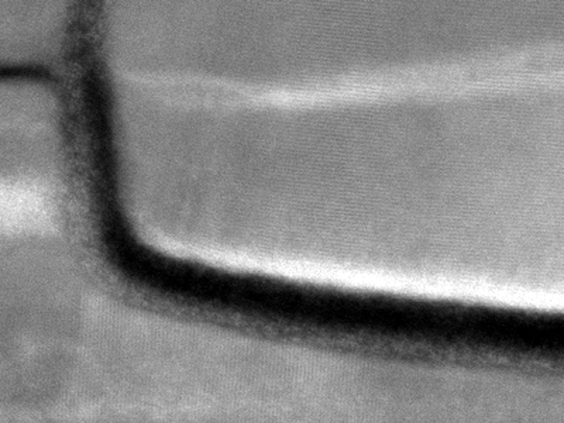
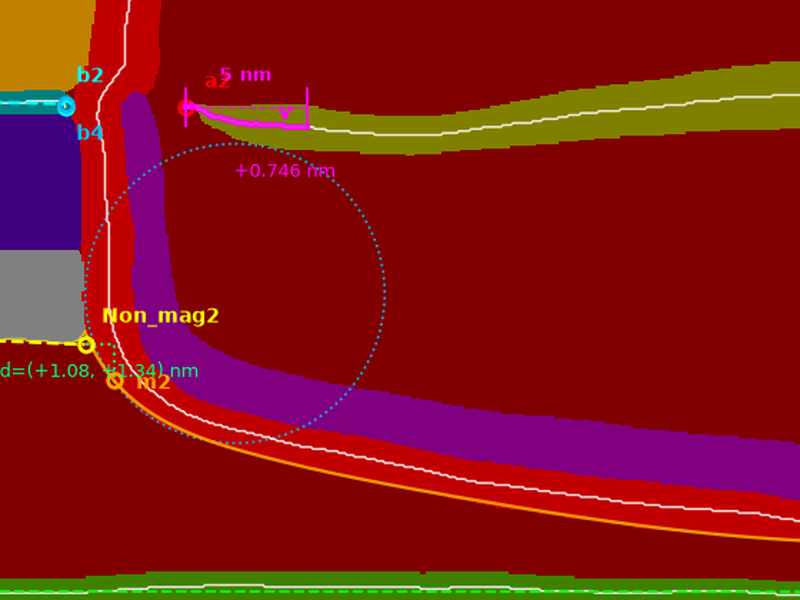
Right-hand region. The thin yellow line is the raw per-column edge; the yellow dashed line is the sigma-clipped fit; Non_mag1/Non_mag2 are that line extended to the x extent of the region. In the raw image the Non_mag block's two lower corners are visibly rounded — those are the columns sigma clipping removes, and the reason the endpoints must run out to the region boundary rather than stop at the last fitted column.
| Which edge | Default auto: count how many columns of each of the two horizontal edges touch Block_D and take the one with fewer contacts. On the sample image top:172 / bottom:0, hence the bottom edge. Written this way rather than hard-coded as "bottom" so that a flipped sample or a relabelled stack does not silently measure the wrong interface. edge_side and both contact counts go into the JSON/CSV. |
|---|---|
| Edge extraction | The extreme foreground pixel per column. Both Non_mag edges are single-valued functions of x, so this is the edge — no side-selection heuristic to get wrong. |
| Fit | Sigma-clipped (2σ by default) TLS. The two corners round off and would drag the line; a single stray predicted pixel would dominate a plain least-squares fit. |
| Endpoint rule | The fitted line is extended outward to the min/max x column of the Non_mag region, not stopped at the columns that survived clipping. The clipped columns are precisely the rounded corners, so stopping there would pull the endpoints inward by however much the corners happen to round; extending to the region boundary makes the endpoints a property of the region rather than of the clipping threshold. y is taken from the line (not from raw pixels), so the corner rounding never contaminates it. max_extrapolation records how far it was extended. |
| Output | edge_side, edge_side_rule, block_d_contact_columns{top,bottom}, edge_columns/columns_used/columns_dropped, Non_mag1, Non_mag2, endpoint_rule, region_x_range_px, max_extrapolation, angle_deg_image/math, length, fit_r2, rmse, max_residual, edge_polyline |
M7 · corner_offsets — Non_mag endpoints ↔ Milling bend points
What it measures: dx/dy and straight-line distance for Non_mag1 → m1 and Non_mag2 → m2, i.e. how far the block corner and the milled bend are offset from each other.
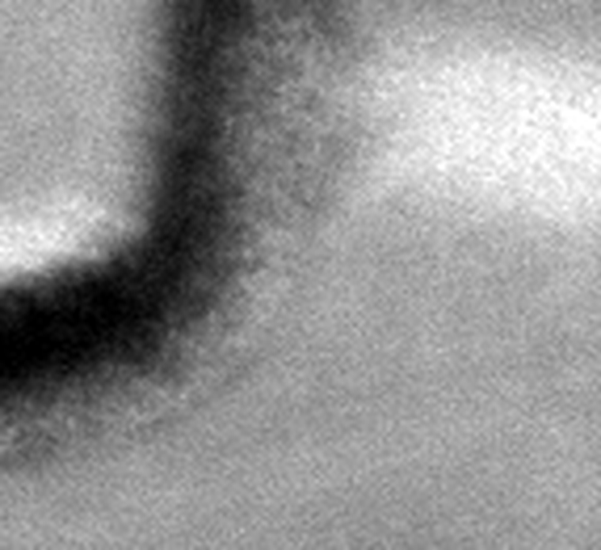
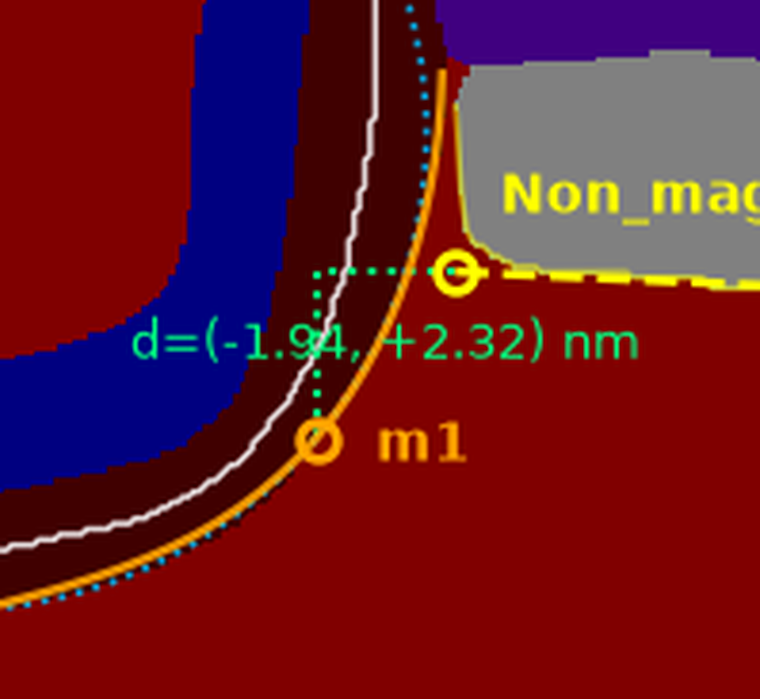
The left corner, zoomed: Non_mag1 (yellow, the block's lower-left corner) to m1 (orange, the milled flank's curvature maximum). This figure shows best why the measurement has to combine two modules: the two points belong to different classes and are located by completely different algorithms, yet it is their relative position that the process cares about. Here d = (−1.94, +2.32) nm.
| What makes it special | It is the only module that combines other measurements. It does not recompute anything; it reads M5 and M6 back out of ctx.results — which is why it must sit after non_mag and milling_* in the registry. |
|---|---|
| Degradation | If a side's dependency failed, that side alone becomes null and the other is still reported. The module only fails outright if neither side is available. |
| Output | non_mag1_m1 / non_mag2_m2, each with from/to (point names), from_point/to_point (dual coordinates), dx/dy/distance, convention |
| On the overlay | A spring-green dotted L: the horizontal leg is dx, the vertical leg is dy, with the values annotated in between |
| Measured | 26 images: non_mag1_m1.dx median −1.251 nm, non_mag2_m2.dx +1.288 nm. |
How much to trust the numbers: what selftest.py covers
Everything is synthetic geometry with known ground truth, so it needs no real data, runs fast, and its conclusions are not arguable.
Expand the self-test checklist
- Guo–Hall: the OpenCV and NumPy implementations are pixel-identical on straight bands, bent bands and random blobs
- Rotation round-trip error < 1e-9 px; rotating by the fitted angle makes the direction exactly horizontal
- TLS angle error < 1e-6° on an exact line; the R²-degenerate flag fires as expected
- Analytic curvature radius within 1% on exact circles (50 / 200 / 600 px)
- Contour tracing: exact perimeter on a rectangular ring, correct selection of the wrap-around run
- Untilted end-to-end image: a1/a2/b1/b2, dx/dy, angles and rmse are exact; skeleton retraction falls in the expected range (exactly 6 px on a 13 px thick layer)
- Non_mag auto side selection: the synthetic mask is isomorphic to the real one (Block_D directly above Non_mag), and the bottom edge must be chosen
- corner_offsets: the reported dx/dy must equal the difference of the two named points exactly (1e-9 px), and the nm conversion likewise
- Decoy component: a fake band 6× larger than the true Non_mag (57000 vs 9150 px) and far from Block_D is inserted; the measurement must still land on the real box (reproducing the bad prediction from the real batch)
- Scale: filename parsing (including returning None when there is no FOV); end-to-end on a
..._FOV_76.37nm.png, nm/px must be exactly 76.37/width - b3/b4: the synthetic MgO_C is a perfect rectangle, so the fitted endpoints must coincide with the skeleton tips
- Milling side selection: the synthetic inner/outer radii are known (200 / 215 px) and
outer/innermust each land on the right one; the selected edge must contain no frame pixels - Tilt by 3° then rectify: recovered tilt error < 0.05°, residual angle < 0.05°, osculating-circle radius error < 10%
05Output files explained
Two files per image, plus one summary in batch mode:
| File | Contents | Purpose |
|---|---|---|
<stem>.json | All metrics + all input parameters + curve series | The one complete record; re-checkable and reproducible |
<stem>_overlay.png | Skeletons, fitted lines, osculating circles, labelled points and a numeric legend | Human review — "did it measure the right place?" |
summary.csv | One row per image, 73 fixed columns | Batch statistics; straight into Excel/pandas |
Milling_L, a whole column disappears and two CSVs no longer line up.
The list is therefore declared explicitly in report.py::CSV_COLUMNS; missing values are left blank and the column count never changes.5.1 JSON field by field
Top level
| Field | Meaning | Example |
|---|---|---|
image / image_path | Mask filename / full path | 751845_..._FOV_76.37nm.png |
image_size_px | Original mask size [w, h] | [1024, 1024] |
mask_note | How the file was interpreted | P (index == class id) or RGB snapped to palette (0.12% off-palette) |
classes | Class order used (index = class id) | ["_background_","SAF_Ru_L",...] |
scale_nm_per_px | The scale. Every nm value = its px value × this | 0.074580078125 |
scale_source | Where the scale came from: filename / --fov-nm / --scale-nm | filename |
fov_nm / image_width_px | Field of view and the width used, for re-checking | 76.37 / 1024 |
tool_version | Analysis tool version | 1.0.0 |
params | Every CLI parameter of this run (minus input/output paths) | Answers "what settings produced this number?" |
rotation | applied, angle_deg_image, matrix (3×3 homogeneous forward matrix), output_size_px | The matrix converts any coordinate between the two frames |
results | The seven modules; failed ones are null | See below |
warnings | De-duplicated array of strings | See §5.4 |
Three composite structures that appear everywhere
Understand these three and you know 90% of the fields.
// 1. Distance — every length is given in px AND nm; never multiply by the scale yourself
"rmse": { "px": 1.9419, "nm": 0.14483 }
// 2. Point — rectified coordinates AND original-image coordinates
"a1": {
"x_px": 401.0, "y_px": 532.0, // rectified (where measurement happens)
"x_orig_px": 400.52, "y_orig_px": 531.61 // on the raw TEM image; overlay directly
}
// 3. Offset — b relative to a, with the sign convention travelling alongside
"a1_b1": {
"dx": { "px": 70.0, "nm": 5.2206 },
"dy": { "px": -4.0, "nm": -0.2983 },
"distance": { "px": 70.114, "nm": 5.2291 },
"convention": "dx>0: b is right of a; dy>0: b is lower than a in the image"
}Angles, goodness of fit, and curves: the conventions
| Field family | Meaning |
|---|---|
angle_deg_image | Angle in image coordinates (y down, clockwise positive). Use this when looking at the overlay. |
angle_deg_math | Angle in mathematical coordinates (counter-clockwise positive) = −angle_deg_image. Use this in formulas. |
fit_r2 | R² of the OLS y~x fit. Meaningless for near-horizontal layers. |
fit_r2_degenerate | true = R² is degenerate, look at rmse instead. Essentially always true for Leveling / MgO_C / Non_mag. |
fit_r2_note | Plain-language reason for the degeneracy, embedded in the data itself. |
fit_r2_axis | Whether R² was computed on y~x or x~y (near-vertical lines switch axis automatically and warn). |
rmse / max_residual | These are what to judge straightness by. Root-mean-square residual and worst single-point residual. |
perp_rmse | RMS of the perpendicular distance to the TLS line (M2). Fairer than y-residuals on a sloped line. |
angle_stderr_deg | Standard error of the fitted angle. It assumes independent residuals, whereas real layer waviness is correlated along x — so treat it as a lower bound on the angular uncertainty. |
*_profile / *_polyline | Whole curve/polyline series (residual_profile, deviation_profile, curvature_profile, edge_polyline, window_polyline). They exist so parameters can be re-tuned without re-running, and so you can plot them yourself. |
*_note / *_rule / convention | The rule behind a number is written into the data, not just the docs — so whoever reads the report in six months does not have to read the code. |
Key fields per module
| Path | Meaning | How to use it |
|---|---|---|
leveling.angle_deg_image | Sample tilt | Unusually large within a batch = mounting/prep issue |
leveling.rmse.nm | Straightness of the Leveling layer | Confidence in the rectification datum |
leveling.residual_angle_deg_after_rotation | Residual angle after rectification | >0.05° means rectification did not fully work |
mgo_c.angle_deg_image / .rmse.nm | MgO_C tilt / straightness | Barrier layer quality |
mgo_c.fit_length.nm | Length of the fitted segment | ≈ barrier layer width |
interfaces.a1_b1.dx.nm | Left lateral offset (raw tips) | Core metric |
interfaces.a1_b3.dx.nm | Same, against the fitted endpoint | Burr-insensitive variant |
interfaces.a2_b2.dx.nm / a2_b4 | Right-hand equivalents | Left/right symmetry check |
interfaces.*.dy.nm | Vertical offset, positive = b lower | Height difference between layers |
interfaces.saf_ru_l_dip.max_downward_deviation.nm | Max dip within 5 nm of the left tip | Degree of tip sagging |
interfaces.saf_ru_l_dip.max_downward_arclength.nm | How far from the tip the maximum occurs | Right at the tip vs at the window edge means different things |
milling_l.max_curvature_point | m1 coordinates | Bend location |
milling_l.local_circle.radius.nm | The radius to quote | Size of the milled fillet |
milling_l.radius.nm | Spline radius, systematically ~15% low | Location and trends only |
milling_l.local_circle.reliable | Circle-fit rms ≤ 3.5 px | Do not quote the radius when false |
milling_l.tail_left/right.angle_deg_image | Angles of the two straight tails | Validates straight–curved–straight; also usable as the milled sidewall angle |
non_mag.edge_side | Which edge was actually chosen | Should be consistent across a batch; investigate if not |
non_mag.length.nm | Non_mag edge length | Block width |
non_mag.angle_deg_image / .rmse.nm | Edge tilt / straightness | — |
non_mag.columns_dropped | Columns removed by sigma clipping | >25% warns; the edge is not straight |
corner_offsets.non_mag1_m1.dx/dy/distance | Left corner offset | — |
corner_offsets.non_mag2_m2.* | Right corner offset | — |
5.2 summary.csv
73 columns whose names are the dotted paths into the JSON (e.g. results.interfaces.a1_b1.dx.nm), so there is zero translation cost between the CSV and the JSON.
Encoding is utf-8-sig, so Excel opens it correctly on a double click.
| Group | Columns |
|---|---|
| Identity & scale | image, fov_nm, image_width_px, scale_nm_per_px, scale_source |
| Rectification | rotation.applied, rotation.angle_deg_image, results.leveling.* (5 columns) |
| Interface offsets | results.interfaces.*: x,y for a1/b1/b3/a2/b2/b4 plus four dx,dy pairs (20 columns) |
| Dip | max_downward_deviation.nm + max_downward_arclength.nm, left and right |
| MgO_C | angle_deg_image, fit_r2, rmse.nm, fit_length.nm |
| Milling L/R | 9 columns each: curvature point x,y, kappa_abs_per_nm, spline radius, circle radius, circle rms, reliable, both tail angles |
| Non_mag | edge_side, Non_mag1/2 x,y, angle_deg_image, length.nm, fit_r2, rmse.nm |
| Corner offsets | dx.nm / dy.nm / distance.nm, left and right |
| Quality | n_warnings (count), warnings (full text joined with | ) |
n_warnings > 0 and open those images' _overlay.png one by one; then look at rows where results.milling_*.local_circle.reliable == false;
finally box-plot the core columns to find outliers. The coordinate columns exist precisely so an outlier can be located on the image immediately.5.3 Overlay colour key

| Colour | Element | Measurement |
|---|---|---|
| thin white line | Guo–Hall skeletons (Leveling / SAF_Ru_L,R / MgO_C / Milling_L,R) | All skeleton-based measurements |
| cyan dashed + b1 b2 | MgO_C fitted segment and skeleton tips | M2 / M3 |
| deep sky blue b3 b4 | MgO_C fitted-segment endpoints | M2 |
| red a1 a2 | SAF_Ru inner tips | M3 |
| magenta | The 5 nm window: thickened skeleton span, end ticks, baseline, arrow and value | M4 |
| orange curve + m1 m2 | Selected milled flank and curvature maximum | M5 |
| sky-blue dotted circle | Osculating circle (visual check on the radius estimate) | M5 |
| yellow line/dashed + Non_mag1 2 | Raw edge polyline, fitted line, both endpoints | M6 |
| spring-green dotted L | Non_mag↔Milling offset (horizontal leg = dx, vertical = dy) | M7 |
| bright green dashed | Leveling line re-fitted after rectification | M1 self-check |
--overlay-on switched on
Drawing the annotations on the raw TEM greyscale instead of the pseudo-colour mask exposes two classes of error at once: a wrong geometry calculation, and a wrong segmentation.
On the mask alone, a segmentation that placed a boundary 3 px off still looks perfect.5.4 Reading the warnings
| Warning | Meaning | What to do |
|---|---|---|
X: dropped N component(s), largest M px -- the layer may be split in the prediction | The class had several components; only the largest was kept | Small M (tens of px) = speckle, ignore. M in the thousands = the segmentation split the layer, and every endpoint on this image is suspect |
... ; kept the component touching Block_D | Non_mag used the anchoring rule rather than area | The area rule would have picked wrong and anchoring saved it. Glance at the overlay to confirm |
Leveling is still tilted by X deg after rectification | Residual angle exceeds 0.05° | The Leveling layer may be fragmented or genuinely not straight; the rectification datum is unreliable |
Leveling is N px long with M px rmse; ... standard error of X deg | Large uncertainty on the rectification angle | Informational; usually a short or ragged layer |
X: the local circle fit has a Y px rms residual (> 3.5) | The osculating circle fit is unreliable | Do not quote that local_circle.radius; at this scale the bend is not a single arc |
X: the outer boundary is fragmented (N of M selected pixels...) | The milled flank is interrupted by another class | Only one segment was measured; the edge length will read short |
X: the curvature maximum sits on the edge of the search band | The maximum landed on a band boundary | Widen --milling-middle-frac or reduce --milling-edge-margin-nm and re-run |
Non_mag: both edges touch Block_D (a top / b bottom columns) | Automatic side selection is ambiguous | Check the overlay; force with --nonmag-edge top|bottom if needed |
Non_mag: sigma-clipping dropped N/M columns | More than 25% clipped | The edge is not straight; the fitted line may not represent it |
image is N px wide, not 1024 | Unexpected mask size | The scale is still correct (computed from the real width), but check the export pipeline |
<module>: class 'X' has no pixels in this mask | The class was not predicted at all | That module is null. This is a segmentation problem, not an analysis one |
no matching raw image of the same size for --overlay-on | No same-size source image found | The overlay falls back to the mask; check the source directory and filename stems |
06Measured batch statistics (26 images, 1300kgroup1)
Command: --mask-dir ...\pseudo_color_prediction --out ...\analysis_batch --csv summary.csv, default parameters, rectification on.
All 26 analysed successfully, 0 failures, 9 warnings in total — all of the "dropped a small component" kind, none affecting a result.
| Metric | Median | σ | Min | Max | Reading |
|---|---|---|---|---|---|
a1_b1.dx (nm) | 5.332 | 0.610 | 4.251 | 6.488 | Raw tip and fitted endpoint agree to 0.001 nm, confirming b3 is equivalent |
a1_b3.dx (nm) | 5.333 | 0.610 | 4.254 | 6.495 | |
a2_b2.dx (nm) | −5.332 | 0.496 | −5.966 | −4.475 | Strictly symmetric with the left side, as expected |
a1_b1.dy (nm) | 0.261 | 0.628 | −0.895 | 1.417 | Vertical offset distributed around zero |
| Left 5 nm dip (nm) | 0.597 | 0.385 | 0.000 | 1.417 | Comparable magnitude on both sides |
| Right 5 nm dip (nm) | 0.709 | 0.274 | 0.224 | 1.268 | |
| m1 circle radius (nm) | 4.835 | 0.837 | 3.731 | 6.653 | Milled fillet is about 5 nm |
| m2 circle radius (nm) | 5.329 | 0.795 | 3.982 | 6.769 | |
| Non_mag length (nm) | 12.048 | 1.543 | 9.297 | 14.692 | Before the anchoring fix, one image reported 33.98 nm |
| Nm1→m1 dx (nm) | −1.251 | 0.532 | −3.334 | −0.693 | Opposite signs left/right — symmetric |
| Nm2→m2 dx (nm) | 1.288 | 0.278 | 0.734 | 2.000 | |
| Leveling tilt (°) | 0.259 | 0.629 | −2.263 | 1.002 | Mounting tilt stays within ±2° |
| MgO_C tilt (°) | −0.341 | 1.601 | −3.541 | 3.540 | Noticeably more scattered than Leveling |
Batch visualisation: plot_summary.py
The table above is a hand-written summary of summary.csv. plot_summary.py, in the same
directory, automates it — it reads one (or several) summary.csv files and produces four figures
plus a statistics CSV:
python tools\tem_analysis\plot_summary.py `
--csv "G:\datasets\TEM\1300kgroup1\analysis_batch\summary.csv" `
--out "...\analysis_batch\plots" --stats-csv
# compare batches: pass --csv more than once
python tools\tem_analysis\plot_summary.py `
--csv runA\summary.csv --csv runB\summary.csv --labels A,B| Output | Question it answers |
|---|---|
summary_distributions.png | How wide is the spread, and which images are outliers? |
summary_trend.png | Is anything drifting along acquisition order? |
summary_symmetry.png | Are the left and right sides symmetric? |
summary_quality.png | Which images should I open the overlay for? |
summary_stats.csv | median / sd / MAD / extremes / outlier image names, per metric |
0.6745·(x−median)/MAD with |z| > 3.5 is used instead
(Iglewicz & Hoaglin). A zero MAD (a constant metric) disables the test rather than flagging every row.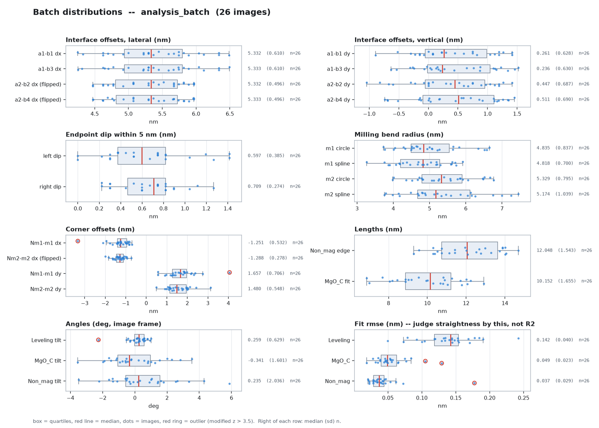
a2_b2.dx, Nm2-m2.dx) are sign-flipped so they share an axis with their
left-hand twin — without the flip the two clusters sit at opposite ends and the whole panel is wasted on the gap.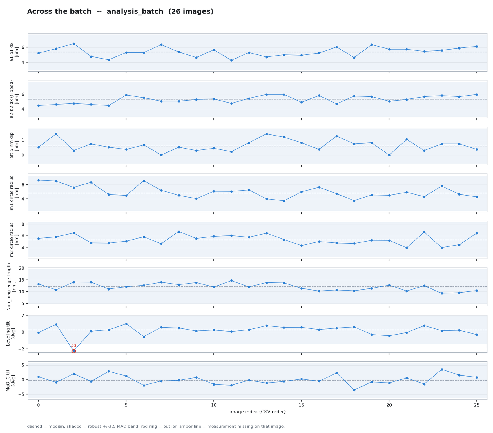
The other two figures (symmetry / run quality)
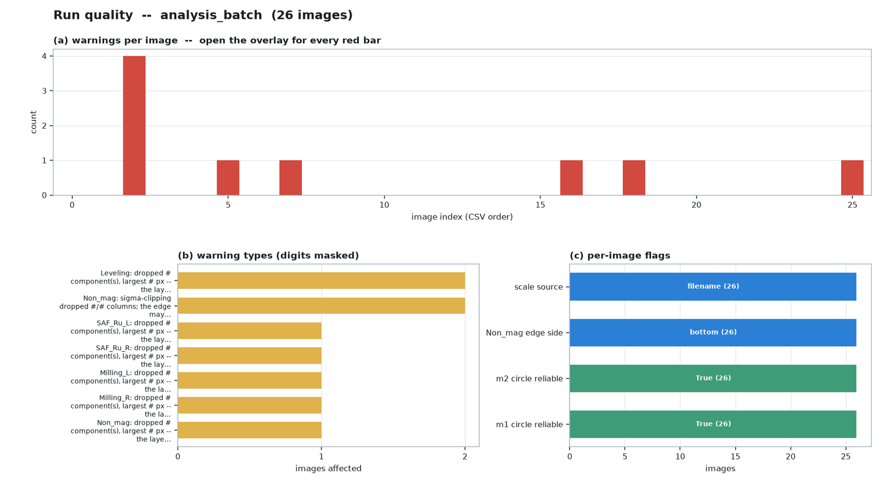
local_circle.reliable,
non_mag.edge_side, scale_source. All 26 images here are reliable=True, all took the
bottom edge, and all got their scale from the filename — three consistent columns mean the batch is homogeneous.07Template for adding a measurement
The architecture exists to make this cheap: a new measurement = one new file + one registry line + a few CSV columns + a self-test. No existing module has to change.
Checklist
| # | Do | Where |
|---|---|---|
| 1 | Create measures/<name>.py implementing measure(ctx) -> dict | tools/tem_analysis/measures/ |
| 2 | Add a line to the MEASURES ordered dict; if it reads another module's result it must come after it | measures/__init__.py |
| 3 | Add the scalars you want in the CSV to CSV_COLUMNS (dotted paths) | report.py |
| 4 | Add any new option to build_parser(); never hard-code a constant in the module (options land in the JSON's params automatically) | analyze.py |
| 5 | To draw it, add a few lines to render_overlay() and one row to _legend_text() | report.py |
| 6 | Add a synthetic-geometry, known-ground-truth case to the self-test | selftest.py |
| 7 | Update the measurement table in the readme | readme.md |
Skeleton you can copy verbatim
"""Requirement N: <one sentence on what this measures>.
<Why it is defined this way. If an alternative was rejected, say why —
whoever reads this next (including you) will wonder why the simpler
approach was not used.>
"""
from __future__ import annotations
from typing import Any, Dict
import numpy as np
from context import AnalysisContext, MissingClass
from geometry import fit_line_ols, fit_line_tls
CLASS = "Block_D" # primary class
AWAY_FROM = "Non_mag" # neighbouring class used to disambiguate (if needed)
def measure(ctx: AnalysisContext) -> Dict[str, Any]:
# --- 1. Get the mask. prefer_near makes component choice depend on
# adjacency rather than sheer area ---
mask = ctx.mask(CLASS, prefer_near=AWAY_FROM) # raises MissingClass if absent
# --- 2. Get the geometry. Skeletons are cached; `extend` only takes effect
# under --endpoint-extend region ---
line = ctx.centerline(CLASS, extend=("xmin", "xmax"))
tls = fit_line_tls(line.pts) # angle from TLS (orientation-unbiased)
ols = fit_line_ols(line.pts) # R2 / rmse from OLS
p1, p2 = tls.endpoints_spanning(line.pts)
# --- 3. When unsure, warn. Never fail silently ---
if ols["axis"] != "y~x":
ctx.warn("{}: closer to vertical; R2 computed on x~y".format(CLASS))
# --- 4. Return. Distances via ctx.dist(), points via ctx.point(),
# offsets via ctx.offset() ---
return {
"skeleton_points": int(len(line)),
"skeleton_length": ctx.dist(line.length), # -> {px, nm}
"angle_deg_image": tls.angle_deg_image,
"angle_deg_math": tls.angle_deg_math,
"fit_r2": ols["r2"],
"fit_r2_degenerate": ols["r2_degenerate"], # True when near-horizontal
"fit_r2_note": ols["r2_note"],
"rmse": ctx.dist(ols["rmse_px"]),
"max_residual": ctx.dist(ols["max_residual_px"]),
"blockD1": ctx.point(p1), # -> {x_px,y_px,x_orig_px,y_orig_px}
"blockD2": ctx.point(p2),
"endpoint_rule": "the fitted line extended to the x extent of the region",
"residual_profile": [ # curve, for later re-checking
[ctx.nm(float(s)), ctx.nm(float(r))]
for s, r in zip(line.s, tls.signed_distance(line.pts))
],
}
# If it combines other measurements (the corner_offsets pattern):
def measure_combined(ctx: AnalysisContext) -> Dict[str, Any]:
a = ctx.measured_point("non_mag", "Non_mag1") # None if unavailable
b = ctx.measured_point("milling_l", "max_curvature_point")
if a is None or b is None:
ctx.warn("...: a required point is unavailable")
return {"offset": None}
return {"offset": {"from_point": ctx.point(a), "to_point": ctx.point(b),
**ctx.offset(a, b)}}
Everything ctx gives you
| Call | Does |
|---|---|
ctx.mask(name, prefer_near=None) | Cleaned boolean mask (min_area filtered, largest/anchored component only), cached; discards warn automatically |
ctx.centerline(name, extend=()) | Longest path through the Guo–Hall skeleton as a Polyline, cached |
ctx.centroid(name) | Class centroid |
ctx.nm(px) / ctx.px(nm) | Unit conversion |
ctx.dist(px) | → {"px":…, "nm":…} |
ctx.point(xy) | → rectified + original coordinates |
ctx.offset(a, b) | → dx/dy/distance + the convention string |
ctx.measured_point(key, *path) | Read a point from an earlier module; None if unavailable |
ctx.polyline_out(line, step) | Serialise a polyline |
ctx.warn(msg) | Add a de-duplicated warning |
ctx.params / ctx.classes / ctx.ids / ctx.rect / ctx.scale_nm | Options, class list, rectified id array, transformer, scale |
Polyline (skeleton.py) also offers .length, .s (arclength), .pts, .x/.y,
.endpoint("xmin"|"xmax"|"ymin"|"ymax"), .window_from(end, max_s), .tangent(i), .tangents().
geometry.py also offers fit_line_tls/ols, trimmed_line_fit (sigma clipping), fit_circle, Spline.fit/curvature/sample.
contour.py: trace_outer_contour (ordered outer contour), longest_run (longest contiguous run on a loop).
Conventions to follow in a new measurement
- Raise
MissingClassfor a missing class; do not return None. The framework converts it intonull+ a warning and keeps the batch running. - Every length goes through
ctx.dist(), every point throughctx.point(). Never multiply by the scale yourself; never emit only one coordinate frame. - Turn magic numbers into CLI options. They then appear automatically in the JSON's
params, so results stay traceable. - Write the rule into the output — like
endpoint_rule,convention,magnitude_note. Make the data self-describing. - Write the self-test before the implementation. Synthesise geometry with known truth and require zero error; "looks right on real data" does not count.
Worked example: adding "Block_D lower edge"
This is a real candidate requirement (present in an early version, absent in the current one — see §8). Mapped onto the template:
- Create
measures/block_d.py, reusing the per-column extreme-pixel idea fromnon_mag.py'sedge_columns(); - Side selection: take the edge not adjacent to Non_mag (the exact mirror of the Non_mag module) and report both contact counts;
- Sigma-clipped TLS fit, with
blockD1/blockD2extended to the x extent of the region; - Register in
MEASURESafternon_mag(and beforecorner_offsetsif you also want an offset against Non_mag); - Add roughly 9 CSV columns such as
results.block_d.blockD1.x_px; - On the overlay,
blockD1/blockD2sit very close toa1/b1, so the label offsets must be staggered by hand (there is already a comment about this on thelabelledlist inreport.py).
08Gaps and next steps
8.1 Missing measurement capabilities
| Capability | Current state | Cost to add |
|---|---|---|
| Block_D lower edge (blockD1 / blockD2) | Traces of it remain in the readme and in a report.py comment, but there is no such entry in MEASURES and no CSV columns for it. The old requirement 7 was superseded by corner_offsets. | Low — reuse non_mag.py wholesale, see the §7 example |
| Per-class shape statistics (area px/nm², contour perimeter, skeleton length per class) | Absent. Only a few modules incidentally report the length of their own skeleton. | Low — a module iterating ctx.classes. But the CSV would grow to ~100 columns (11 classes × 8 items) |
| Measurements on MgO_L / MgO_R / Block_U | These three are annotated and segmented but no measurement uses them (they only participate as "neighbours" in Milling side selection). | Depends on the requirement |
| Layer thickness (per-layer thickness and its variation along x) | Absent. Every current measurement is an endpoint, an edge or an angle — none is a thickness. | Medium — needs a definition of "along which normal", plus handling of layer curvature |
| Batch statistics and plots | added plot_summary.py (see §6): distributions / trend / symmetry / run quality, plus summary_stats.csv, with multi-batch comparison. | — |
| Results written back to the DB / shown in the UI | The analyser is a fully standalone CLI with no code coupling to the Next.js platform, and results never reach the database. | Medium — needs a schema plus an API route to trigger analysis |
| Validation against manual measurement | The self-test proves the implementation matches the definition; it does not prove the definition matches what the customer wants. | Needs a set of manually measured images as a reference |
G:\datasets\TEM\1300kgroup2\normal_test_temfull\ there is a later batch of results (dated 8/10) whose CSV has 559 columns,
including class_shapes.* (per-class area/perimeter/skeleton length), block_d_left.* and block_d_right.* — fields that do not exist in this repository,
under a different naming convention (PascalCase vs the current dotted lowercase).
So a more complete variant existed (or exists elsewhere), but it is not in this repo.
The "missing" entries above are missing relative to the current repository code — if that variant can be found, several of them could be ported rather than rewritten.8.2 Known methodological limits
- Skeleton tips retract by about half a band width by default; the effect largely cancels in differences. Use
--endpoint-extend regionwhen absolute endpoints matter. - Rectification adds 1–2 px of resampling noise. The self-test residual angle is 0.007°, but dy error can reach ~5 px. For dy-sensitive metrics, consider
--no-rotateand handling the tilt analytically. - Curvature is a scale-dependent quantity. There is no unique "true" curvature on a 1 px quantised edge. Two numbers are given (spline and osculating circle) with their biases documented, but the user must know which one they are using.
- Segmentation error is not quantified. The analyser assumes the label map is correct. If segmentation places a boundary 2 px off, every downstream number shifts by 0.15 nm — with no warning at all. This is the largest unquantified error source in the whole pipeline.
09Figure inventory
Available figures (used above, all from real data)
| File | Content | Source |
|---|---|---|
assets/01_raw.png | Raw TEM greyscale | 1300kgroup2\normal_test\753964_RMF 18(36,45)_...tif |
assets/02_mask.png | Pseudo-colour label map | Same image, pseudo_color_prediction/ |
assets/03_added.png | Blended preview (counter-example) | Same image, added_prediction/ |
assets/04_overlay_raw.png | Measurement overlay on the raw image | normal_test_analysis/*_overlay.png |
assets/05_overlay_mask.png | Measurement overlay on the mask | 1300kgroup1\analysis\751845_RMF 24(12,15)_... |
Six matched "raw ↔ overlay" close-ups. Each *_raw.png and *_ovl.png comes from the same crop box: the overlay lives in the rectified frame, so the untouched .tif is first put through the same rectification (rebuilt from the angle recorded in the JSON) and only then cropped, which makes the two align pixel for pixel. The *_raw versions are additionally contrast-stretched locally. | ||
assets/30_leveling_{raw,ovl}.png | M1 · Leveling layer and the rectified fit line | Full-width strip |
assets/33_interfaces_{raw,ovl}.png | M2 / M3 · a1/b1/b3 endpoints | Central region |
assets/31_dip_{raw,ovl}.png | M4 · left 5 nm dip window | Around a1 |
assets/34_milling_{raw,ovl}.png | M5 · m1 and the osculating circle | Left Milling band |
assets/35_nonmag_{raw,ovl}.png | M6 · Non_mag edge and endpoints | Right-hand region |
assets/32_corner_{raw,ovl}.png | M7 · Non_mag1 → m1 corner offset | Left corner |
assets/10_legend.png | Overlay text legend | Crop of 05 |
assets/14_batch_stats.png | Batch distributions (8 grouped box plots) | plot_summary.py → summary_distributions.png |
assets/14b_batch_trend.png | Batch trend | plot_summary.py → summary_trend.png |
assets/14c_batch_quality.png | Run quality (warnings / flags) | plot_summary.py → summary_quality.png |
assets/14d_batch_slide.png | 16:9 four-panel version (used by the deck) | plot_summary.py --slide-figure |
Figures still needed (placeholders are in place; drop the file into assets/ and it appears)
The positions are already marked with dashed boxes in the body. Match the filename and the image shows up automatically — or just tell me where the file is and I will wire it in.
| Filename | Section | What it should show |
|---|---|---|
assets/11_napari_ui.png | §2.1 | Full-window napari screenshot: layer list + custom panel (class dropdown / brush / contour / export button) + a half-annotated canvas |
assets/12_train_job.png | §2.3 | Web app training job page: status, progress, generated command |
assets/13_train_curve.png | §2.3 | Loss and mIoU against iteration |
assets/15_definition.png | §4 intro | The most valuable one: the customer's original measurement-definition diagram (should be in G:\datasets\TEM\TEM metrology\*.pptx). Placed next to our overlay, it directly demonstrates that we measure what they asked for |
assets/16_manual_vs_auto.png | §8.2 | Manual vs automated measurement comparison (scatter or table), answering "how accurate is it?" |
G:\datasets\TEM\TEM metrology\ (ABS TEM measurement definition / HR FTEM measurement parameters v2 / MetrologyForDFLjunctions).
A screenshot of the diagram defining a1/b1/m1/Non_mag placed alongside our overlay would change the persuasiveness of this report entirely.